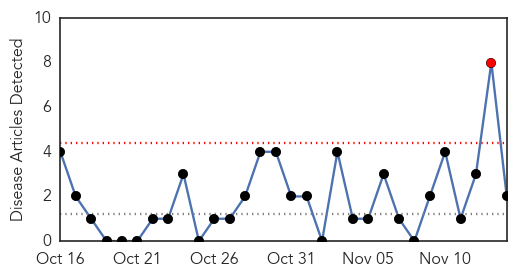
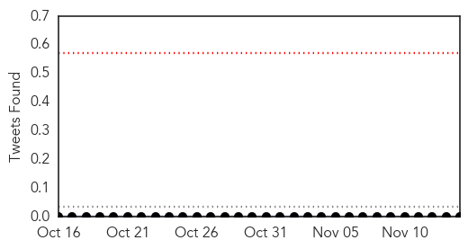
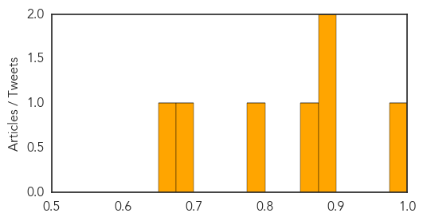

Pertussis
30-Day Web Trend
1 alerts, 0 warnings

30-Day Twitter Trend
0 alerts, 0 warnings

Article Locations
Article Confidences

Top Articles:
Top Tweets:
-
No tweets found for Nov 14, 2015
Dengue Fever
30-Day Web Trend
0 alerts, 0 warnings

30-Day Twitter Trend
5 alerts, 3 warnings

Article Locations

Article Confidences
Top Articles:
- 0.994
- 101 cases of dengue fever confirmed on Hawaii Island
- 0.877
- Lawmakers: DOH needs to reach deeper into communities affected by dengue
- 0.877
- Lawmakers urge DOH to travel into communities to combat dengue
- 0.851
- Big Island Dengue Fever Count at 38
- 0.792
- Big Island lawmaker wants state to offer free dengue fever tests
- 0.684
- Dengue Control Task Force to be Constituted in Pondy
- 0.656
- New funding boosts research for controlling TB
Top Tweets:
- 0.566
- Flavivirus news: 38 cases of locally acquired dengue fever confirmed on Hawaii Island - KHON2: ... https://t.co/P9w69GIOqF pathogenposse